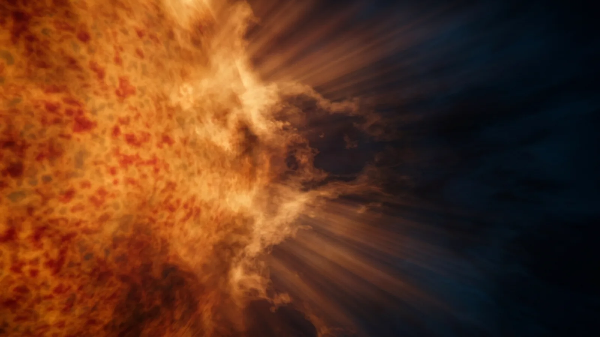
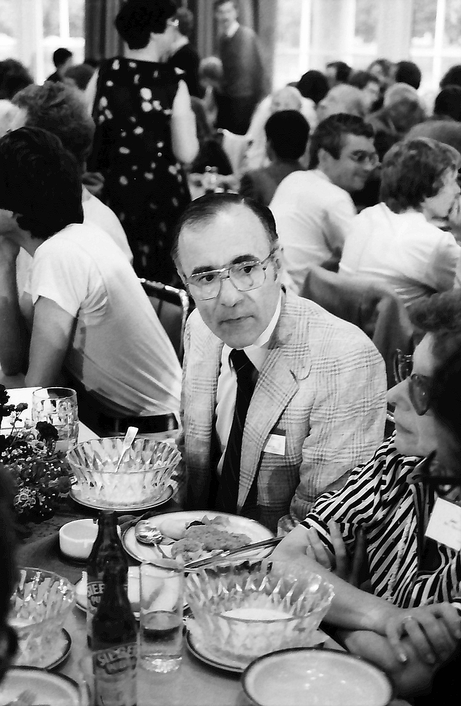
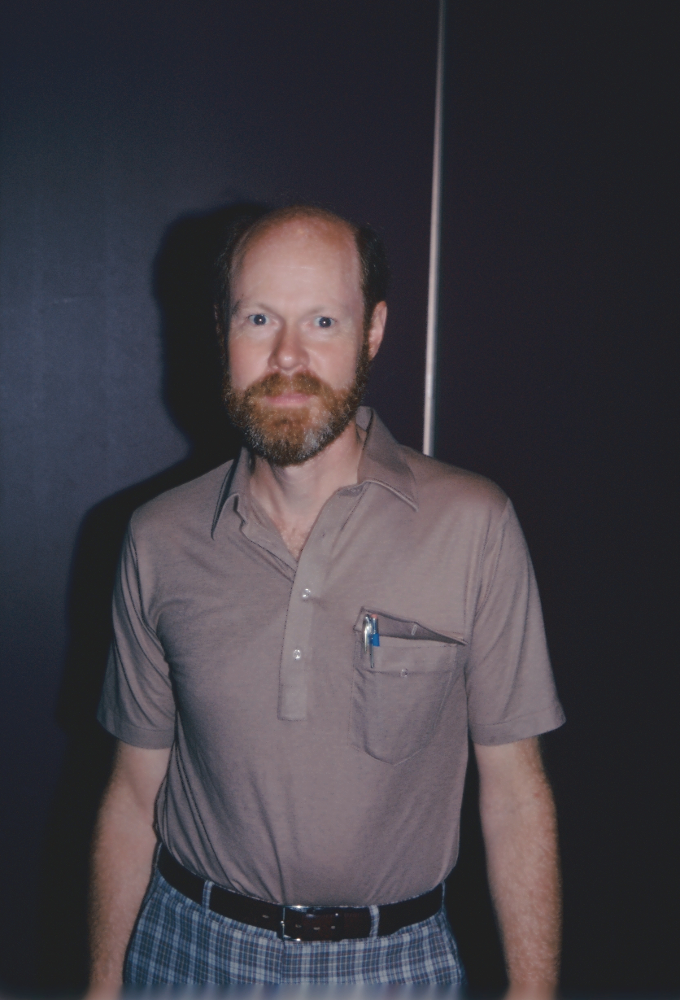
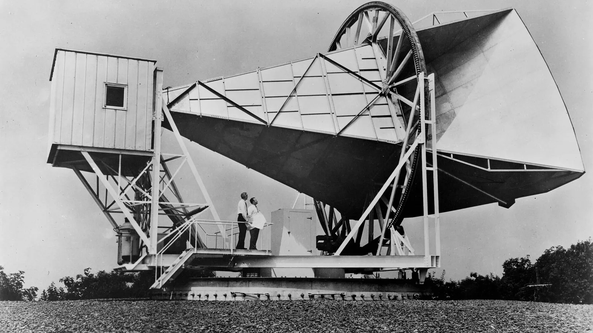
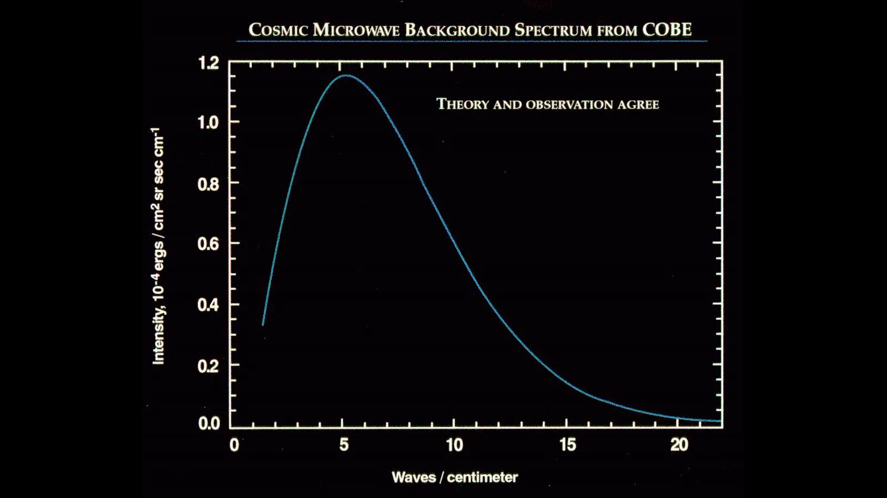
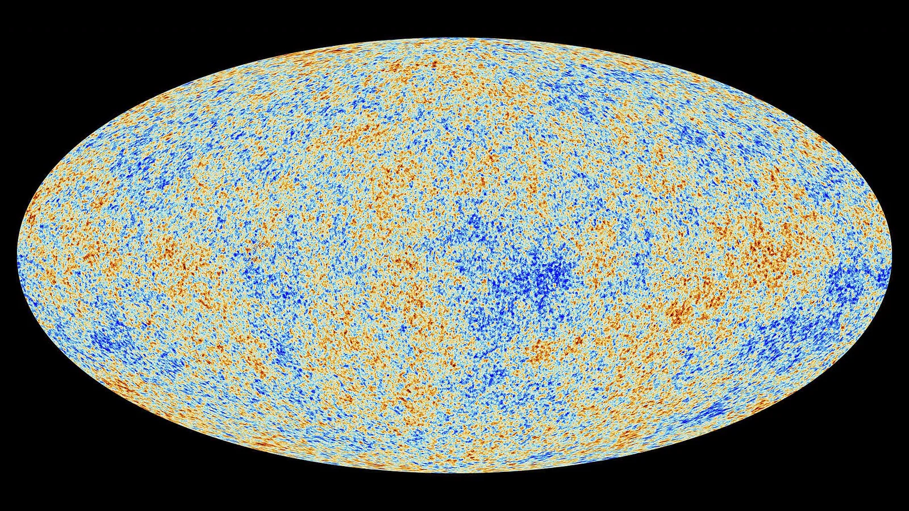
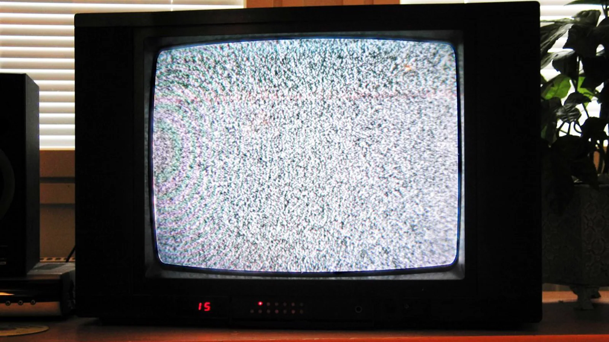

A primeira luz
A segunda marca da régua do ano cósmico: 1º de janeiro, 00:14, o instante em que o universo fica transparente. A luz que saiu ali ainda está chegando, e é a mais velha que dá pra ver.
No episódio anterior: a primeira marca, na meia-noite, e o que ninguém sabe sobre o antes.

O que se mede, e quem achou


O chiado que não saía
Uma antena feita pros satélites Echo e Telstar captava um chiado que vinha do céu inteiro, de dia e de noite, em sete centímetros de onda. Até os pombos que moravam na corneta foram tirados. O chiado ficou.

O que é essa luz
Abaixo de dez mil graus os átomos começam a se formar; aos três mil graus, a luz passa a viajar livre. É essa luz que ainda chega, de todas as direções.

O esticão da luz
O que se mede e o que se traduz

A régua do ano cósmico, com lupa
Um pedaço do chiado da TV
No próximo episódio: depois dessa luz o universo fica escuro. As primeiras estrelas vieram depois, e ninguém nunca viu nenhuma delas.
